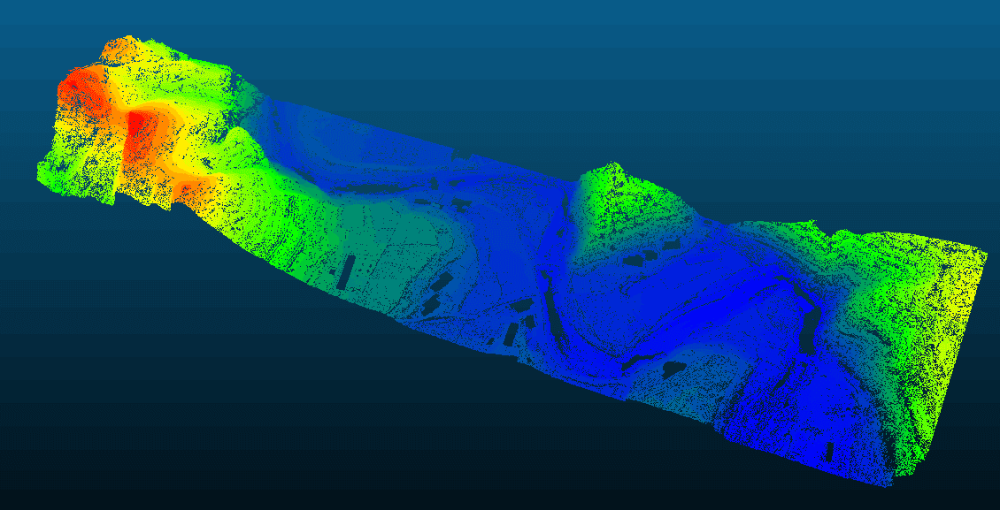

Free command-line tool for airborne LiDAR ground filtering.
Free PTD — Progressive TIN Densification Filter
A free, CPU-parallel implementation of the progressive TIN densification algorithm for classifying ground and non-ground points in airborne LiDAR data, with automatic block-based processing for large datasets.
Problem
Airborne LiDAR point clouds contain both ground and non-ground returns. Ground filtering is the essential first step for DEM generation, building extraction, and vegetation analysis. Existing commercial solutions are expensive; existing open-source alternatives are often slow or struggle with complex terrain.
Approach
- Implement the progressive TIN densification algorithm, iteratively adding ground points to a triangulated irregular network based on distance and angle thresholds.
- Use CPU parallel processing to accelerate the iterative densification loop for large point clouds.
- Adopt an automatic block-based strategy that partitions data by spatial tiles, enabling processing of arbitrarily large datasets within constrained memory.
My Contribution
I independently designed and implemented the complete software from scratch, including the core algorithm, multi-threaded parallelization, block-based memory management, and command-line interface.
The software is released as freeware for non-commercial use and has been adopted by users in the photogrammetry community.
Outcome
The filter reliably separates ground and non-ground points across diverse terrain types including urban, forested, and mountainous areas. Block-based processing allows handling datasets exceeding hundreds of millions of points without excessive memory usage.
Download: Baidu Cloud (password: vezv)
